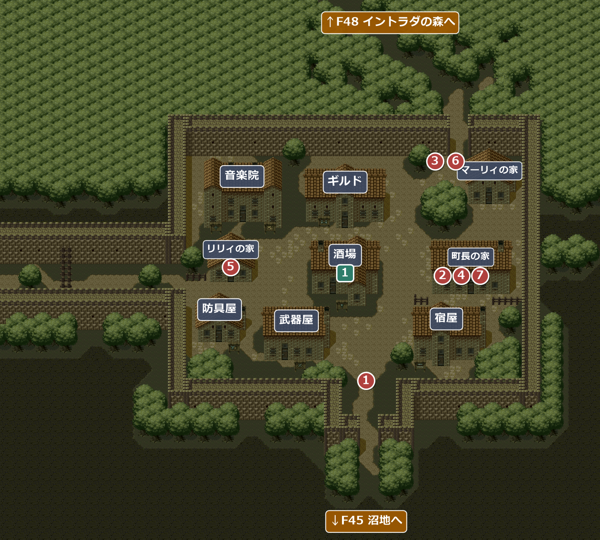
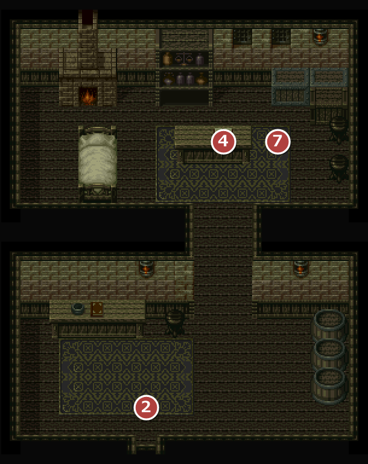
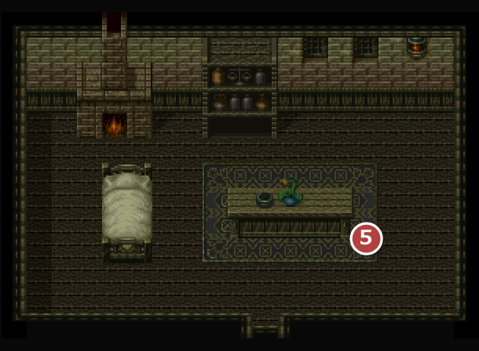
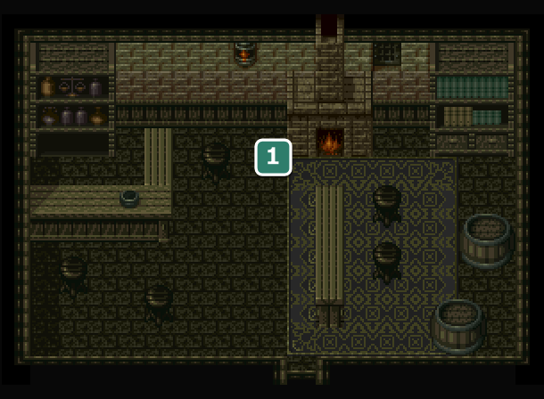
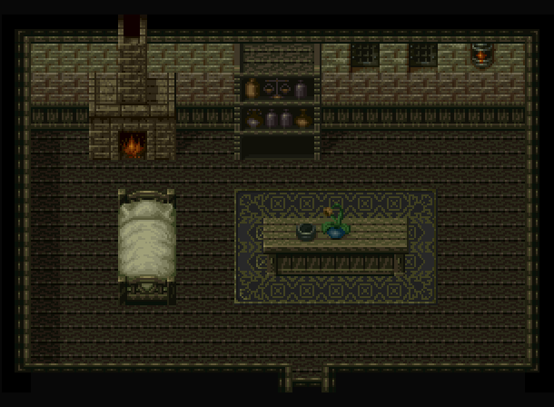
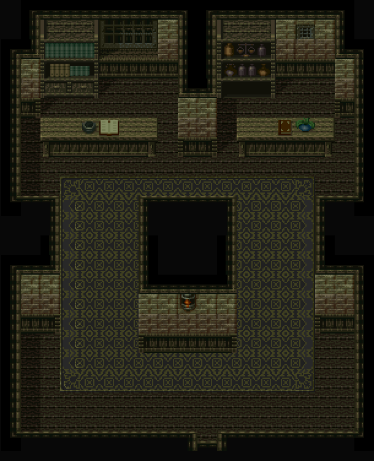
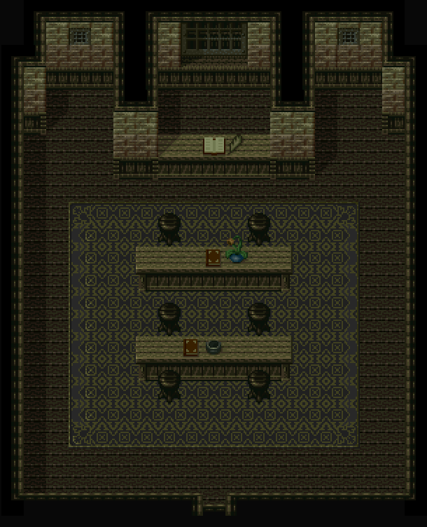
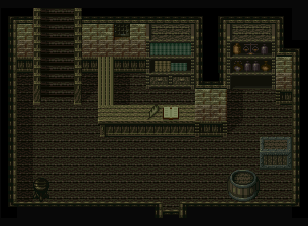

FIELD46
沼の町イントラダ
エンカウント率0%沼地の北にある町。隣町のホタと昔からいがみ合っていて、祭りの像が消えた騒ぎで町の男たちは殺気立っている。
名前 建物・場所→ ほかの FIELD へ1メインイベント1サブイベント

バグ右下の宿屋の屋根の絵が崩れていて、三角屋根の下に四角い壁が付いたような形になっている。
イベント
1
門の騒ぎ
場所: 南の門の内側(X114-130 Y127)
「《 沼の町 イントラダ 》」。門をくぐると、像を盗んだホタの者だと決めつけたホイル団の男たちに取り囲まれる。そこへトラビスの知り合いのマーリィが駆けつけ、ホタの人ではないと取りなして、町長の家へ連れていってくれる。
次へ自動で町長の家へ(②)。
2
町長の依頼
場所: 町長の家(部屋4606)の入口
町長によると、祭りで聖人ジョリスをたたえる像がなくなり、昔からいがみ合っている隣町ホタのコール団の仕業と疑われている。トラビスは報酬と引き換えに像の行方を調べることを引き受け、まずホタの町を探ることになる。
次へ↑F48 イントラダの森へ。森を抜けてホタの町へ。
F47 泥の町ホタを追い出されたあと
3
町長の娘
場所: 北の通り(X148-156 Y53)
マーリィが駆け寄ってきて、町長の娘が行方不明になっていると知らせる。
次へ町長の家へ(④)。
4
ロミーの捜索
場所: 町長の家(部屋4606)の町長
町長の娘のロミーが、像の騒ぎに紛れて2、3日前から帰っていない。像がなくなった頃と重なるので、娘の捜索も頼まれる。トラビスはホタを追い出されたこともあり、しばらく町で聞き込みをすることにする。
次へリリィの家へ(⑤)。
5
リリィ
場所: リリィの家(部屋4604)のリリィ
ロミーの友達のリリィは、ロミーがホタのコール団の団長ウルフとこっそり付き合っていて、町の近くの古い洞窟のそばで会っていたと明かす。町の北の森に、幹に狼の絵が彫られた木があり、その奥に隠れた道があるという。
！④より前に話しても「何も知らないわ」と言うだけ。
バグリリィに横や下から話しかけると、主人公がいったんリリィの左上へ回り込んでから、正面へ移動し直す。上(後ろ)から話しかけたときだけ回り込む作りのはずが、条件が逆になっている。
次へ↑F48 イントラダの森の狼の絵の木へ。
F50 ジョリスの洞窟でウルフを見つけたあと
6
コール団との誤解
場所: 北の通り(X148-156 Y53)
マーリィが、ホタのコール団の男たちが町に来て話をし、互いに誤解していたと分かったと伝える。何か分かったので、ホタに来てほしいという。
次へF47 泥の町ホタへ。
F51 ドドルの塔をクリアしたあと
サブイベント
1
音符ペンダント
場所: 酒場(部屋4605)の男(X20 Y15)
時限F50 ジョリスの洞窟でウルフと話すまで。その後、町に戻ると必ずコール団との誤解の話(⑥)が起き、男はペンダントの話をしなくなる。
母の形見の音符の形のペンダントを落としたので、見つけたらお礼をすると頼まれる。イントラダの森で拾った音符ペンダントを持っていくと、お礼に古い楽譜をくれる(ペンダントはなくなる)。
入手 石の壁の歌
石の壁の歌
部屋
！武器屋と防具屋の2部屋は、中の作りがまったく同じ。マーリィの家とリリィの家も同じ作り。どちらも隣町ホタの店(防具屋・雑貨屋・寺院)・町民の家と同じ作りになっている。
4606イントラダの町長の家

2町長の依頼 4ロミーの捜索 7町長の報酬
4604イントラダのリリィの家

5リリィ
4605イントラダの酒場

1音符ペンダント
4603イントラダのマーリィの家

4601イントラダの音楽院

寺院を兼ねていて、僧侶に 15GOLD 払うと、パーティー全員の呪いを解いてくれる。
4602イントラダのギルド

隣町との争いにかり出されて(争いが収まった後は平和になって)、誰もいない。仲間は雇えない。
4607イントラダの武器屋

バグ店内で現在地を表示させる(L1・R1 ボタン)と「イントラダの武器屋」と出るが、ここは防具屋(看板・店員・品物はすべて防具屋)。
| 商品名 | 値段 | |
|---|---|---|
| イブヘルム | 130 | |
| ブロンズチェーン | 200 | |
| ノルマンシールド | 150 | |
4608イントラダの防具屋

バグ店内で現在地を表示させる(L1・R1 ボタン)と「イントラダの防具屋」と出るが、ここは武器屋(看板・店員・品物はすべて武器屋)。
| 商品名 | 値段 | |
|---|---|---|
| Ａの剣 | 280 | |
| 戦斧 | 300 | |
| 鉄の槍 | 300 | |
| ムチ | 250 | |
46094610イントラダの宿屋・イントラダの宿屋２Ｆ


4609宿泊は1人 7GOLD。
4610
バグ暖炉に炎が無い。
没イベント情報
- 没抜けた仲間の家を訪ねる会話がディスク内に残されている … マーリィの家(部屋4603)で、⑦でパーティーを抜けたトラビスと話す会話。家のトラビスは、町の北の通り(X148-156 Y53)を通るたびに隠れる設定になっていて、元に戻す所が無いため、抜けた後に訪ねても家にいない。北の通りを一度通った後に訪ねると結婚の報告になる作り。消し忘れか、意図して消したのかは分からない⑦の後、すぐに訪ねたときトラビス「よっ、さっそく遊びに来てくれたか。まあ、きたない所だが、ゆっくりしていってくれ」マーリィ「まっ！ 人の家のこと、なんだと思っているの！」北の通りを通ってから訪ねたときトラビス「よっ、どうなってる？ こっちはこっちで色々あってな…まあ、一身上の事が多いが」マーリィ「へええ？ 一身上ねえ？ まったく、他人ごとみたいにさ！ こーいう男なんだから…」トラビス「…いててて！ おい、つねるなよ…」マーリィ「なによ！あんたがはっきりしないから… 実はね、わたしたち結婚することにしたの」フィデレがいるときフィデレ「ええー！ ひゅーひゅー！ うらやましー！！」マーリィ「それもね、なんとウルフさんとロミーさんとの共同結婚式なのよ！」アイリス「おめでとう。しあわせそうね」マーリィ「あなたたちにもぜひ出席してもらいたいけど…。また旅を続けるそうね」アイリス「ごめんなさいね。わたしたちの旅は、とっても大切な旅なの」フィデレ「ああ～ん！ あたしは出たいよ～」アイリス「ほら、さっさといくわよ！」フィデレ「ぶつぶつ…この性悪女」アイリス「何か言った？」フィデレ「いえ、なんでもないです…」フィデレがいないときアイリス「おめでとう。しあわせそうね」マーリィ「あなたたちにもぜひ出席してもらいたいけど…。また旅を続けるそうね」アイリス「ごめんなさいね。わたしたちの旅は、とっても大切な旅なの」